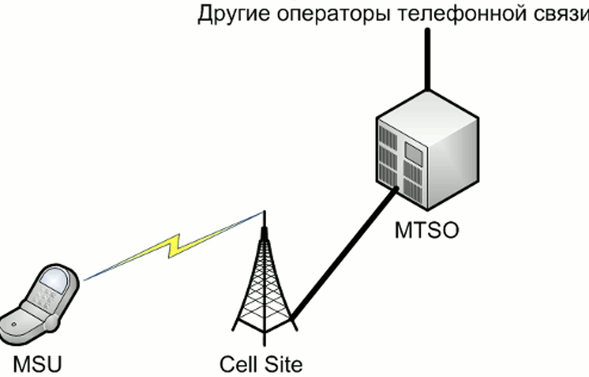

Беспроводные технологии передачи данных

|
|
Беспроводные технологии передачи данных |
|
|
|
WWANWWAN (Wireless Wide Area Network) — разновидность беспроводных компьютерных сетей, главной особенностью которой является широкая зона охвата. Зона охвата WWAN достигает гораздо больших размеров - район, город. Передача данных разделяется по направлениям «вниз» (downlink, DL) — от сети к абоненту, и «вверх» (uplink, UL) — от абонента к сети. Мобильные терминалы разделяются на классы по количеству одновременно используемых тайм-слотов для передачи и приёма данных. AMPSAMPS (аббр. от англ. Advanced Mobile Phone Service) — это аналоговый стандарт сотовой связи, относящийся к сетям первого поколения (1G). AMPS получил наибольшее распространение в Северной Америке в 1980-х — 1990-х, преимущественно в США, где и был разработан. Последние сети AMPS были отключены в 2008—2010 годах. AMPS относится к стандартам первого поколения сотовой связи и использует технологию FDMA (Frequency division multiple access) — метод частотного разделения каналов. При этом для каждого соединения выделяется индивидуальный частотный канал, шириною 30 кГц. Следовательно, чем выше необходима емкость, тем шире должна быть полоса частот, задействованная системой. Изначально предполагалось, что система AMPS будет работать в диапазоне 800 МГц. Однако со временем, для реализации сетей AMPS в других странах и для расширения возможностей существующих сетей, появились другие возможные частотные диапазоны, например 1900 МГц. 18 апреля 2008 года прекратила свою работу двустандартная сеть AMPS/CDMA-800 Fora Communications (принадлежала Теле2) в Санкт-Петербурге. Дольше всех продержался новосибирский «Билайн», отключивший оборудование AMPS 31.12.2009 в 00:00. Архитектура сети стандарта AMPSMTSO – это центральный объект сети мобильной связи. Он включает в себя Mobile Switching Centre (MSC), оборудование мониторинга сети, транспортное оборудование для связи с внешними сетями телефонной связи. Основной функцией MSC является коммутация соединений между абонентами сети и, возможно, с другими телефонными сетями. Кроме того, MSC выполняет функции контроля за радиоресурсами, составления счетов за оказанные услуги связи, определение местоположения абонентов и некоторые другие. MSU – мобильное абонентское устройство. Фактически, это оконечное пользовательское оборудование, с помощью которого абоненты получают услуги сети. Каждое MSU включает в себя Numeric Assignment Module – цифровой модуль назначения, который используется для обеспечения безопасного доступа абонентов в сеть. Несмотря на безоговорочные преимущества цифровых систем сотовой связи перед аналоговыми, AMPS все же остается одним из лучших представителей стандартов первого поколения. Стандарт AMPS показал существовавшие недостатки аналоговых сетей и заложил прочную основу для разработки новых систем сотовой связи. До сих пор в некоторых странах продолжают функционировать сети стандарта AMPS. GSMРазработка стандарта GSM началась в 1982 году организацией по стандартизации CEPT (European Conference of Postal and Telecommunications Administrations). В 1991 году в Финляндии была введена в эксплуатацию первая в мире сеть GSM. Уже к концу 1993 года число абонентов, использующих этот стандарт, перевалило за миллион. К этому времени сети GSM были развернуты в 73 странах мира. Возможность роуминга (в том числе и международного) является главной отличительной чертой стандарта GSM от стандартов первого поколения. Сеть GSM делится на 2 системы. Каждая из этих систем включает в себя ряд функциональных устройств, которые, в свою очередь являются компонентами сети мобильной радиосвязи. Архитектура сети стандарта GSMСистема коммутации – Network Switching System - выполняет функции обслуживания вызовов и установления соединений, а также отвечает за реализацию всех назначенных абоненту услуг. В нее входят следующие функциональные устройства: Центр коммутации мобильной связи (MSC) - является главным элементом системы GSM, он осуществляет контроль за базовыми станциями и за контроллерами базовых станций, расположенными в его зоне обслуживания. Основная его функция заключается в установлении соединения между абонентами сети. Домашний регистр местоположения (HLR) - содержит информацию об абонентах, которые приписаны к данному центру коммутации мобильной связи. В нем хранится информация о подключенных услугах, о его, местоположении абонента. Центр аутентификации (AUC) - предназначен для аутентификации абонентов. Эта процедура предназначена для предотвращения несанкционированного доступа в сеть. Система базовых станций - Base Station System (BSS) - отвечает за все функции, относящиеся к радиоинтерфейсу. Эта система включает в себя следующие функциональные блоки: Контроллер базовых станций (BSC) - управляет всеми функциями, относящимися к работе радиоканалов в сети GSМ. Это коммутатор большой емкости, который обеспечивает такие функции, как хэндовер, назначение радиоканалов и сбор данных. Базовая станция (BTS) - управляет радиоинтерфейсом. Она включает в себя такое радиооборудование, как трансиверы (приемо-передатчики) и антенны, которые необходимы для обслуживание каждой соты в сети. Элементы сети, относящиеся к пакетной передаче данных: Узел обслуживания абонентов GPRS (SGSN) - Пакетные данные в отличии от голосового трафика передаются от подсистемы базовых станций не в сторону центра коммутации мобильной связи, а в сторону узла обслуживания абонентов GPRS. Шлюзовой узел GPRS (GGSN) - представляет собой шлюз сети. Если пакеты маршрутизируются за пределы сети оператора, то они попадают именно в шлюзовой узел GPRS. Этот элемент часто конструктивно объединяется вместе с узлом обслуживания абонентов GPRS в одном устройстве. UMTSUMTS (Universal Mobile Telecommunications System) — стандарт сотовой связи третьего поколения. В первую очередь их появление обусловлено возросшими потребностями абонентов в скорости передачи данных. Стандарт UMTS (Universal Mobile Telecommunications System - Универсальная система мобильной связи) нашел наибольшее распространение среди других стандартов этого поколения на территории Европы, в том числе и России. Скорость передачи данных для сетей UMTS может достигать 2Мбит/сек. Благодаря технологии HSDPA-High Speed Downlink Packet Access (3.5G), которая была внедрена в 2006 году, максимальная скорость возросла до 14 Мбит/сек. Эти и другие преимущества UMTS позволяют предоставлять абонентам широкий перечень услуг: видеозвонки, видеоконференции, высококачественные голосовые звонки, загрузка файлов с высокой скоростью, сетевые игры, мобильная коммерция. Архитектура сети стандарта UMTSВ первых релизах стандарта UMTS (R99, R4) подсистема коммутации не отличалась по своей структуре от той же подсистемы сетей второго поколения. В нее входили MSC – Mobile Switching Centre, который выполнял функции коммутации, установления соединения, тарификации и др., а также ряд регистров HLR, VLR, AUC, которые предназначены для хранения абонентских данных. В более поздних релизах (R5, R6, R7, R8) функции MSC были разделены между двумя устройствами: MSC-Server и MGW (Media gateway). MSC-Server отвечает за установление соединений, тарификацию, выполняет некоторые функции аутентификации. MGW представляет собой коммутационное поле, подчиненное MSC-Server. В сети UMTS по сравнению с сетью GSM наибольшие изменения претерпела подсистема базовых станций. Отмеченные выше преимущества достигаются в первую очередь за счет новой технологии передачи информации между базовой станцией и телефоном абонента. CDMA2000Стандарт CDMA2000 – это представитель стандартов сотовой связи третьего поколения 3G. Он также известен под именами IMT-CDMA Multi-Carrier или IS-2000. Основной целью создания CDMA2000 было увеличение пропускной способности и максимально разрешенных скоростей передачи данных, по сравнению с предшествующим стандартом CDMA One. Разработка CDMA2000 началась в 2000 году, организацией 3GPP2. В итоге был выпущен целый набор стандартов, описывающих новый радио интерфейс и значительные улучшения в сети радиодоступа (Radio Access Network, RAN) и системе коммутации (CN), которые позволили добиться указанных выше требований. Таким образом, CDMA2000 – это технология, которая обеспечила эволюцию сетям CDMAOne/IS-95 к стандартам третьего поколения. В стандарте CDMA One данные передавалась по тем же системам, что и голос. Это значительно ограничивало максимальную скорость передачи данных и общую емкость сети. Packet Core Network (PCN) – сеть с коммутацией пакетов, которая позволяет передавать данные с большей скоростью и безопасностью. Архитектура сети стандарта CDMA200Мобильная станция (MS - Mobile Station). В сети CDMA2000 мобильная станция – это абонентское устройство. Сеть радиодоступа (RAN - Radio Access Network). Сеть радиодоступа является входной точкой абонента во всю сеть оператора, независимо от предоставляемой услуги. Мобильная станция взаимодействует с RAN для получения необходимых ресурсов сети с целью доступа к пакетной сети, и далее следит за состоянием выделенных ресурсов. Базовая станция (BTS - Base Station Transceiver) – контролирует все действия на радио интерфейсе между BTS и MS, а также служит интерфейсом между сетью и мобильными устройствами. Управление радио ресурсами, например, назначение частотных каналов, разделение сот, управление мощностью передачи относится к задачам базовой станции. Устройство контроля пакетных соединений (PCF - Packet Control Function) – новый элемент сети CDMA2000. Его главной задачей является маршрутизация пакетов между BTS и PDSN. Главная задача PCF заключается в планировании распределения ресурсов сети доступа, включая радио ресурсы, так чтобы они могли быть максимально эффективно. HSPAHigh Speed Packet Access представляет собой объединение двух мобильных протоколов, High Speed Downlink Packet Access (HSDPA) и High Speed Uplink Packet Access (HSUPA), которое расширяет и улучшает производительность существующих мобильных телекоммуникационных сетей 3G с использованием протоколов WCDMA. Новый стандарт позволяет битрейтам достигать 337 Мбит/с в нисходящего канала и 34 Мбит/с в восходящем канале. Однако эти скорости редко достигаются на практике. High Speed Downlink Packet Access (HSDPA) — это усовершенствованный протокол мобильной связи 3G (третьего поколения) в семействе High-Speed Packet Access (HSPA). HSDPA также известен как 3.5G и 3G+. Это позволяет сетям на базе UMTS иметь более высокую скорость и емкость передачи данных. High-Speed Uplink Packet Access (HSUPA) — это протокол мобильной телефонии 3G в семействе HSPA. Максимальная скорость передачи данных до 5,76 Мбит/с, расширения емкости и сокращения задержки. Сети универсальной системы мобильной связи (Universal mobile telecommunication system, UMTS), которые базируются на широкополосном множественном доступе с кодовым разделением каналов (wideband code division multiple access, WCDMA), были развернуты во всем мире в качестве систем мобильной связи третьего поколения (3G). UMTS предлагает эффективный путь перехода к высокоскоростному пакетному доступу (high-speed packet access, HSPA). HSDPA обеспечивает скорость передачи данных в нисходящем канале до 14,4 Мбит/с. HSPA также увеличивает полосу пропускания в сетях UMTS и значительно уменьшает задержку. LTEОбъемы передаваемой информации в телекоммуникационных сетях растут с каждым днем. Чтобы удовлетворить потребности пользователей по скорости передачи данных и набору услуг был разработан 4 стандарт связи. Сети LTE поддерживают скорости передачи данных до 326,4 Мбит/сек. Для обеспечения минимальных задержек передачи данных в сети LTE сетевая архитектура и протоколы претерпели значительные изменения. К примеру, количество транспортных каналов сокращено более чем в 2 раза. Существенное упрощение принципов построения сети повлекло и сокращение числа состояний, в которых может находиться мобильный терминал UE. Архитектура сети стандарта LTEСтруктура сети сильно отличается от сетей стандартов 2G и 3G. Существенные изменения претерпела и подсистема базовых станций, и подсистема коммутации. Была изменена технология передачи данных между оборудованием пользователя и базовой станцией. Также подверглись изменению и протоколы передачи данных между сетевыми элементами. Вся информация (голос, данные) передается в виде пакетов. Таким образом, уже нет разделения на части обрабатывающие либо только голосовую информацию, либо только пакетные данные. Serving SAE Gateway или просто Serving Gateway (SGW) – обслуживающий шлюз сети LTE. Предназначен для обработки и маршрутизации пакетных данных, поступающих из/в подсистему базовых станций. По сути, заменяет MSC, MGW и SGSN сети UMTS. SGW имеет прямое соединение с сетями второго и третьего поколений того же оператора, что упрощает передачу соединения в /из них по причинам ухудшения зоны покрытия, перегрузок. Public Data Network (PDN) SAE Gateway или просто PDN Gateway (PGW) – шлюз к/от сетей других операторов. Если информация (голос, данные) передаются из/в сети данного оператора, то они маршрутизируются именно через PGW. Mobility Management Entity (MME) – узел управления мобильностью. Предназначен для управления мобильностью абонентов сети LTE. Home Subscriber Server (HSS) – сервер абонентских данных. HSS представляет собой объединение VLR, HLR, AUC выполненных в одном устройстве. Policy and Charging Rules Function (PCRF) – узел выставления счетов абонентам за оказанные услуги связи. Все перечисленные выше элементы относятся к системе коммутации сети LTE. В системе базовых станций остался лишь один элемент – базовая станция, которая получила название eNodeB. Этот элемент выполняет функции и базовой станции, и контроллера базовых станций сети LTE. За счет этого упрощается расширение сети, т. к. не требуется расширение емкости контроллеров или добавления новых. LTE-AdvancedLTE-Advanced — это название спецификации 3GPP 10 версии, которым Международный союз электросвязи присвоил сертификат «IMT-Advanced» — официальный статус сетей четвёртого поколения. Предыдущие версии LTE не являются технологией 4G. LTE Advanced стандартизирован 3GPP как главное улучшение стандарта Long Term Evolution (LTE). Официально представлен в конце 2009 года сектору стандартизации электросвязи Международного союза электросвязи в качестве кандидата на систему 4G. LTE Advanced был утверждён ITU и завершён 3GPP в марте 2011 года. LTE-A может обеспечивать передачу данных на скоростях от 100 Мбит/с (12,5 Мб/с) до 1 Гбит/с (125 Мб/с). Основные принципиальные новшества, которые отличают LTE-A от LTE — это агрегация частот (CA - Carrier Aggregation), улучшенное использование много антенных технологий (MIMO), а также поддержка релейного режима включения базовых станций (RN - Relay Nodes). Поддерживаются гибкие варианты полосы пропускания с несущей частотой от 1,4 МГц до 20 МГц и дуплексная передача с разделением по частоте. eNodeBeNodeB(eNB) – базовая станция сети стандарта LTE. Она является аналогом NodeB для сети UMTS и BTS для сети GSM. Основной задачей eNodeB является преобразование сигнала пришедшего от SGW в высокочастотный сигнал и передать его через секторные антенны (антенну). Именно eNodeB отвечает за покрытие сети LTE и является шлюзом между абонентским терминалом и сетью LTE. Все функции контроллера возложены на eNodeB. Благодаря отсутствию контроллера базовых станций емкость и покрытие сети доступа становятся легко масштабируемы. Теперь нет промежуточного элемента, на емкость которого необходимо ориентироваться, планируя расширение сети. 5G5G — пятое поколение мобильной связи, действующее на основе стандартов телекоммуникаций (5G/IMT-2020), следующих за существующими стандартами 4G/IMT-Advanced. Технологии 5G должны обеспечивать более высокую пропускную способность по сравнению с технологиями 4G, что позволит обеспечить большую доступность широкополосной мобильной связи, а также использование режимов device-to-device, прямое соединение между абонентами), более надёжные масштабные системы коммуникации между устройствами, скорость интернета 1—2 Гбит/с, меньший расход энергии батарей, чем у 4G-оборудования, что благоприятно скажется на развитии Интернета вещей. Время задержки в сетях 5G может быть сокращено до 1 мс. На практике в большинстве случаев это значение будет выше (порядка 4 мс), но для самых критических задач задержка не превышает миллисекунды. Для сравнения, задержка в сетях 4G составляет 40–50 мс. 5G позволяет создать до миллиона подключений на каждый квадратный километр, это на порядок выше, чем у предыдущего поколения сетей. 5G может нормально работать в экспрессах, летящих со скоростью 500 км/ч. Для уменьшения энергопотребления и повышения дальности используется технология beamforming — динамическое формирование радиолуча для конкретного абонента. Как же это делается? Базовая станция запоминает, откуда и во сколько пришел сигнал (он исходит не только от вашего телефона, но и как отражение от препятствий), и при помощи методов триангуляции высчитывает ваше примерное местоположение, а затем строит оптимальную траекторию сигнала. Ещё одна новая технология 5G сети – это massive MIMO. Например, существующие базовые станции 4G сегодня поддерживают, в среднем, 12 портов. Восемь портов на передачу данных и 4 порта на приём. Базовые станции сети связи 5G могут иметь 100 портов и соответствующее количество узконаправленных антенн. За счёт этого пропускная способность увеличивается в 22 раза. Радио интерфейс, определённый 3GPP TS 38.211 V1.2.0 для 5G, известен как New Radio (NR), а спецификация подразделяется на две полосы частот: FR1 (600–6000 МГц) и FR2 (24–100 ГГц), каждая с различными возможностями. В стандарте 5G предусмотрена работа на частотах 24 ГГц и выше, такой сигнал 5G не способен эффективно работать на расстоянии более нескольких сотен метров между передатчиком и приёмником. В результате базовые станции 5G должны располагаться через каждые несколько сотен метров, чтобы использовать эти высокие частоты. Кроме того, настолько высокочастотные сигналы с большими потерями проникают через твердые объекты, такие как автомобили, деревья и стены. В рамках 5G NR выделяется два диапазона:
Network slicing / Нарезка сети - концепция, согласно которой сетевые ресурсы дифференцируются для нужд различных сегментов потребителей. Физическая инфраструктура делится на виртуальные платформы, каждая из которых задействует те ресурсы и технологии, которые лучше всего подходят для решения её задач: eMBB — Enhanced Mobile Broadband / Улучшенная Мобильная Широкополосная связь - Привычный пользовательский интернет, но более быстрый и качественный. Скорость внутри помещений сможет достигать 1 Гбит/с, а на улице — до 300 Мбит/с. Предельные скорости станут возможны на этапе установки наиболее совершенных антенн, работающих в миллиметровом диапазоне (mmWave). Они удачно впишутся в ландшафт благодаря своим незначительным размерам — например, на столбах, деревьях, стенах зданий. URLLC — Ultra Reliable and Low Latency Communications / Сверхнадёжные коммуникации с низкой задержкой - Коммуникации, в которых важна не столько скорость, сколько низкая задержка. Это актуально для автономного транспорта, которому в критической ситуации для принятия решения может понадобиться менее миллисекунды. В настоящее время идёт дискуссия о замене подобными технологиями спутниковой навигации. мMTC — massive Machine Type Communication / Массовые межмашинные коммуникации - Межмашинные коммуникации или M2M, а также IoT — отдельный сегмент потребителей связи 5G. Он характеризуется подключением большого числа устройств, чаще всего промышленных, с низким энергопотреблением, для которых основным требованием является стабильность и надёжность подключения. Это, в частности, измерительные устройства, датчики, сенсоры, объекты инфраструктуры умного города. DECTDECT - digital enhanced cordless telecommunication — технология беспроводной связи на частотах 1880—1900 МГц с модуляцией GMSK, используется в современных радиотелефонах. Стандарт DECT не только получил широчайшее распространение в Европе, но и является наиболее популярным стандартом беспроводного стационарного телефона в мире благодаря простоте развёртывания DECT-сетей, широкому спектру пользовательских услуг и высокому качеству связи. В Европе DECT практически полностью вытеснил беспроводные телефоны стандартов CT2, CT3; на других континентах DECT успешно конкурирует с американским стандартом PACS и японским PHS. Цифровой стандарт DECT первоначально разрабатывался для Европы и утверждался в 1992 году Европейским институтом телекоммуникационных стандартов. Стандарт описывает взаимодействие базовой станции с мобильными терминалами, при этом может обеспечиваться как передача голоса, так и данных. |
|
разработка Леонида Спиридонова |
 Главная
Главная WWAN
WWAN